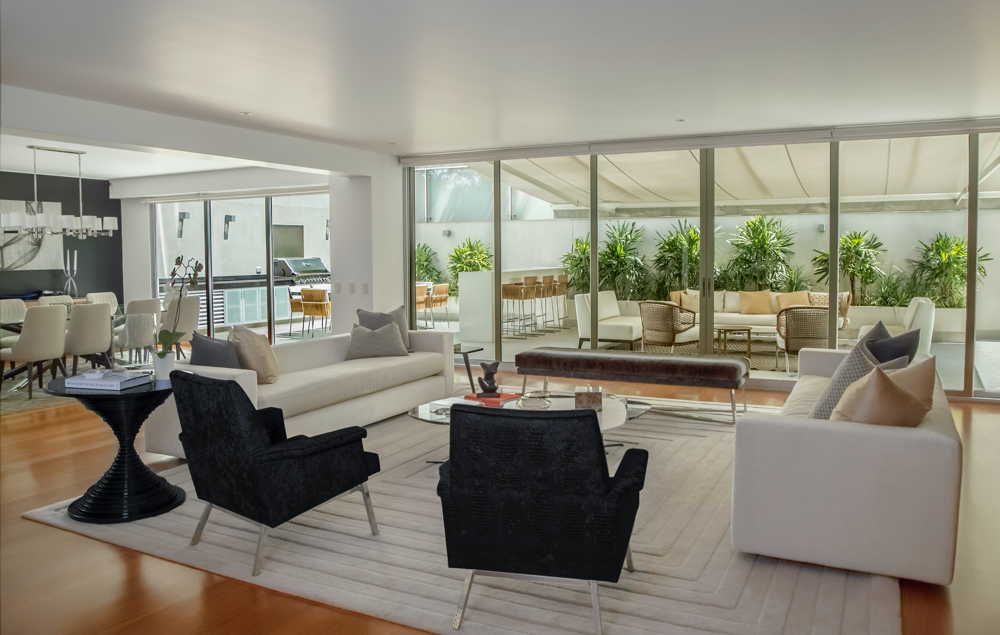
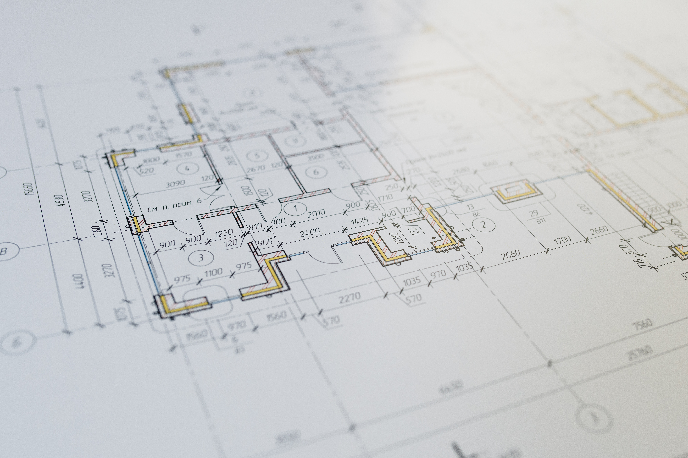
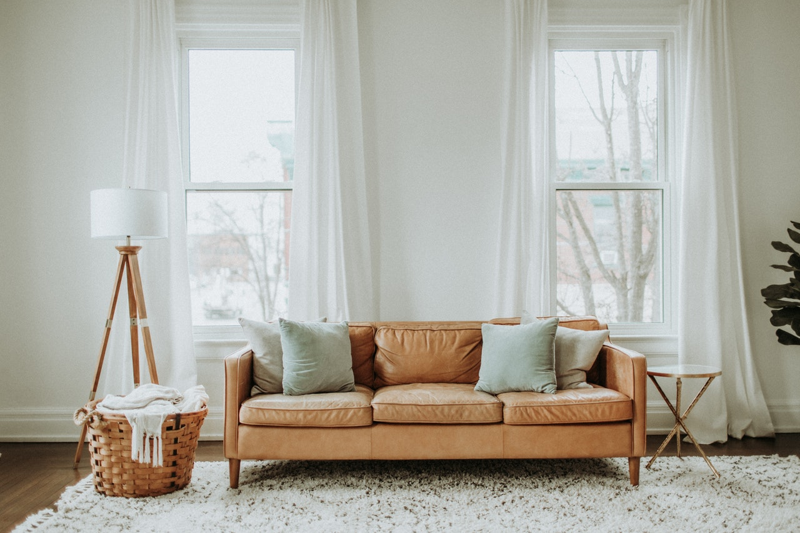
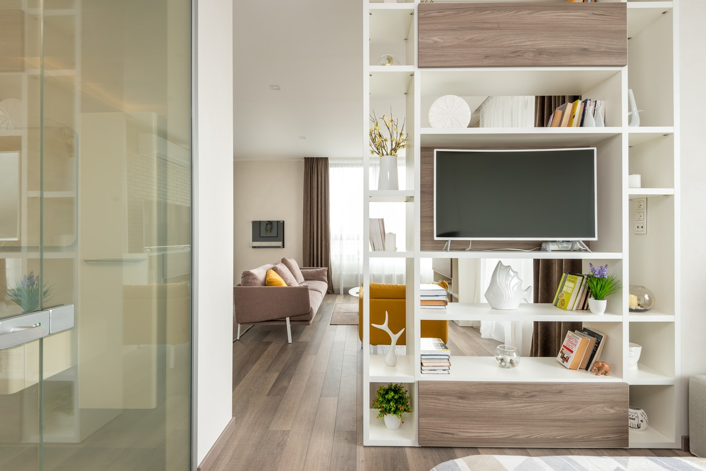

Услуги дизайнера интерьера

Разработка дизайн-проекта интерьера

Это основная часть работы дизайнера. Именно за разработкой дизайн-проекта большинство людей и обращаются к дизайнерам. Дизайн-проект это большой альбом в состав которого входят:
- Планировочное решение с расстановкой мебели
- Изображения будущего интерьера в фотографическом качестве
- Комплект чертежей для строителей
- Ведомость отделочных материалов
-
Ведомости по комплектации проекта
- наименование;
- бренд;
- цвет;
- размер;
- поставщик;
- количество;
- изображение.
Благодаря дизайн-проекту вы сможете получить именно тот интерьер о котором мечтали, при сэкономив огромное количество времени, нервов и денег, так как все заботы и сложности берет на себя дизайнер. Более подробно узнать о том, что такое дизайн-проект интерьера, вы можете здесь.
Комплектация проекта

Комплектация проекта — это подбор всех элементов интерьера, таких как отделочные материалы, мебель, сантехника, светильники и т. д. Это очень важная услуга дизайнера интерьера. Именно от гармоничного подбора всех элементов интерьера и зависит, в конечном итоге, результат работы дизайнера. Помимо всего прочего дизайнер строго следит за бюджетом, который вы выделили на комплектацию вашего интерьера и подбирает все самое лучшее из указанной ценовой категории.
Авторский надзор

Авторский надзор — это регулярный и систематический контроль дизайнера за реализацией дизайн-проекта на
строительной площадке. В рамках авторского надзора дизайнер регулярно выезжает на объект и контролирует
соответствие выполняемых работ проектным решениям.
Плюс ко всему дизайнер постоянно на связи с клиентом
и со
строителями и может своевременно вносить необходимые правки в проект и давать свои рекомендации.
Декорирование

Когда все отделочные работы на объекте завершены, светильники установлены, а мебель расставлена на свои места, наступает время декорирования. Декорирование — это как вишенка на торте в дизайне интерьера. В рамках декорирования дизайнер интерьера подбирает текстиль, ковры, статуэтки, картины и другие декоративные элементы для создания завершенного, комфортного и гармоничного интерьера.